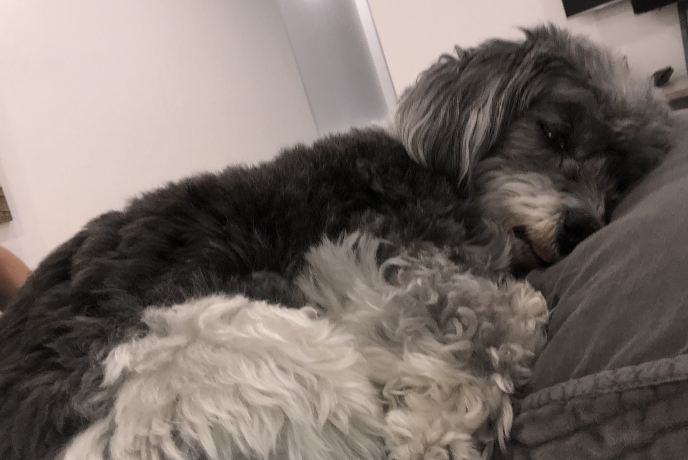

Hi! This is me. My name is Maguire Grayson. I was born in Los Angeles, California. Back at home in Brentwood, I live with my two parents, Todd and Hollye, and sometime my older brother, Jackson. I played sports when I was younger and loved to travel. I am really into design as well as marketing. I hope to spend my future with my family traveling around the world and learning new things.
This image was taken on a family trip to New York. Ever since my brother and I have been away at school, we don't see our parents as much, so when we do, we like to be as close as possible. This is one of my favorite family photos because of how close we are and how bundled up and happy we look.
This image is of my dog Rocky. He is a 2-year-old English Golden Retriever. We got him a little over a year ago. He is a goofy and super sweet dog. Shoutout the Wisconsin hat! While I am away at school, my parents send me daily photos of him swimming or having a good time back home in LA to make sure I still see him all the time.

This image is of my dog Marais. She is a 10-year-old Havanese. We got her when I was 9 years old. She is the sweetest dog ever. Every morning when I'm home, she comes into my room and cuddles up with me in bed and then sleeps with me for half the day. I miss her a lot when I wake up while away at school.